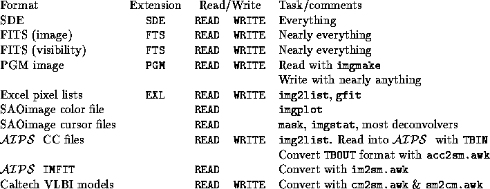

SDE tasks primarily use FITS files as both their storage and their interchange format. The images written in this format can be read by nearly any image processing package that understands FITS. The visibility databases are written in random groups FITS format, and should be readable by any package capable of doing sensible things with them. Some nonstandard objects such as complex images must be stored in native SDE format, which merely dumps an entire subtree of the memory database to disk in an architecture dependent manner. Anything can be written as a .SDE file, but the only thing which can be done with these files is read them back into SDE . Their advantage is slightly faster IO speed and guaranteed bitwise fidelity. FITS images are machine independent, portable to many packages, and can be examined directly by SAOimage, so FITS storage is preferable when possible.
Several other files types are supported in limited contexts. PGM images serve as an entry point to a wide variety of image display and processing software, including xv. Excel pixel lists are the format required by the general purpose fitting program, gaussfit, and is commonly supported by spreadsheets. Some of the least used list based formats have simply been supported by short awk scripts found in the bin/unix area which convert to and from the standard SDE model format.
In the following table, the fixed extension can be used to force SDE to write a file of a given type when there is more than one possibility. The default is FITS format.
